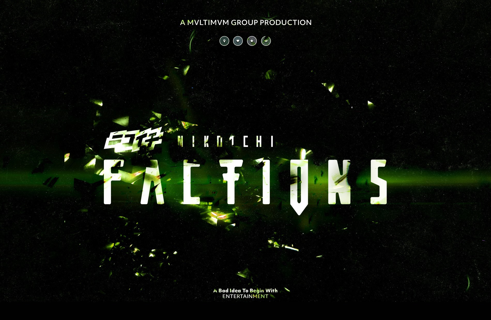

BARTHÉLÉMY VIELLE
CLVSTR
WORK
STUDIES
INFORMATION
Motion on ·
← INDEX STUDIES
CLVSTR / Recherche 08
Factions
Image · key art / 1 composition
Une recherche d’image et de traitement typographique pour Factions.

01 / 01 — Factions / composition originale
↗︎
← Recherche précédente
Lac d’Estaing
Recherche suivante ↗︎
Signes